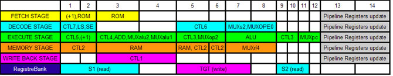

Help Index
RiSC16 Visual Simulator (Pipelined Implementation)
├ Sequence of events
├ Interface Description
└ Pipeline Hazards
The pipeline is composed of 5 stages:
Each machine cycle, which is the same as the time to execute one stage of the pipeline, is made of 14 half clock cycles.

A description of the RiSC16 pipeline version can be found in the "RiSC-pipe" document of Prof Jacob.
Help Index
RiSC16 Visual Simulator (Pipelined Implementation)
├ Sequence of events
├ Interface Description
└ Pipeline Hazards